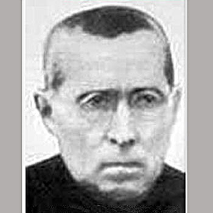

Isusovački blaženici
Svećenik · Rektor · Mučenik
Bl. Toma Sitjar Fortiá
1866. – 1936.
Nastavnik filozofije i isusovački rektor djelovao je u Urugvaju i Španjolskoj. Prvi je među jedanaestoricom subraće podnio mučeništvo tijekom građanskoga rata.
Tekst je preveden i prilagođen uz pomoć umjetne inteligencije.

Izvor slike
- Spomendan
- 19. kolovoza
- Zaštitništvo
- Nije navedeno u izvoru
- Životni vijek
- 1866. – 1936.
- Djelovanje
- Obrazovanje i poučavanje vjere · Progoni i progonstvo · Mučeništvo
- Razdoblje
- 19., 20. stoljeće
- Svećeničko ređenje
- 1900.
- Mjesto službe
- Urugvaj i Španjolska
- Datum smrti
- 19. kolovoza 1936.
U kalendaru zbirke koristi se dan smrti. Taj datum nije zasebna potvrda liturgijskoga spomendana.
Životopis
Toma Sitjar Fortiá rođen je 1866. u Gironi. Godine 1880. stupio je u isusovački novicijat u Verueli. Nakon filozofskoga studija osam je godina poučavao u biskupijskom sjemeništu u Montevideu u Urugvaju. Vrativši se u Španjolsku, studirao je teologiju i 1900. primio svećenički red.
Nastavio je predavati filozofiju, uključujući metafiziku mladoj subraći. Bio je poglavar u Tarragoni, zatim rektor u Gandíji. Posljednje zavjete položio je 1903. Službeni dekret pamti njegovu molitvenu revnost i osobitu pobožnost prema Euharistiji i Majci Božjoj.
Nakon raspuštanja Družbe u Španjolskoj 1932. ostao je uz malu raspršenu zajednicu. U srpnju 1936. uhićen je i zatvoren s nekoliko subraće. Nakon dvadeset pet dana zatočenja rečeno mu je da će biti oslobođen. Umjesto toga odveden je izvan grada i 19. kolovoza pogubljen pod maslinom, držeći krunicu.
Mjesto u skupini mučenika. Prvi je stradao među jedanaestoricom isusovaca Gandíje i Valencije. Njihove životne službe i mjesta pogubljenja razlikovali su se; zajedničko im je crkveno priznanje mučeništva. Ivan Pavao II. proglasio ih je blaženima 11. ožujka 2001.
Tekst je preveden i prilagođen uz pomoć umjetne inteligencije.
Pročitaj više na izvornoj stranici ↗